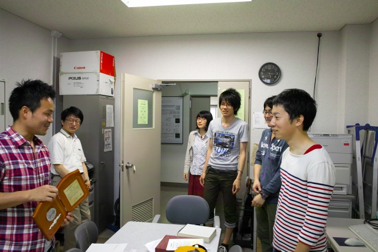
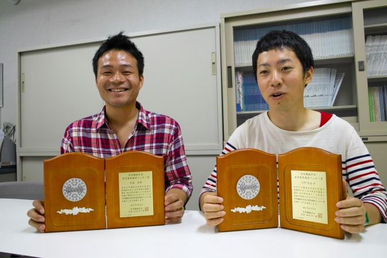
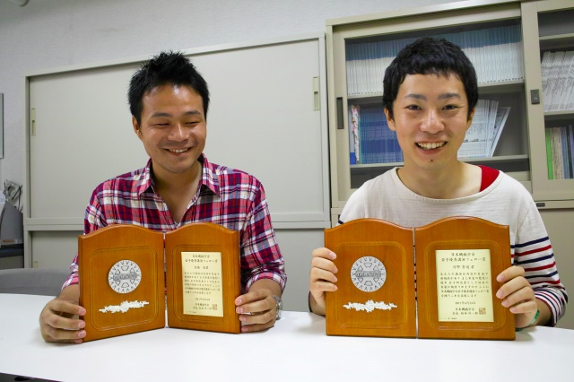
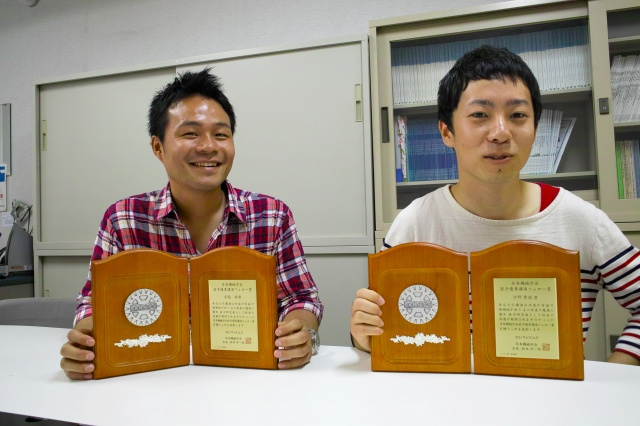
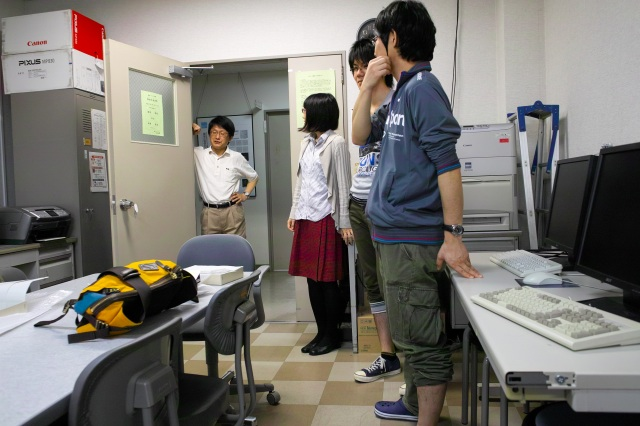
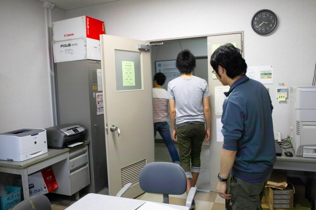

| ・ 日本機械学会若手優秀講演フェロー賞授賞式@501F (H23.06.18) | |||
河野貴道（現：三菱電機）くんと宮脇 諭（現：富士ゼロックス）くんが日本機械学会若手優秀講演フェロー賞を受賞しました．ダブル受賞は非常に喜ばしい！受賞した発表は，二波長再生によるディジタルホログラフィ繊維状物体計測(河野くん)，ディジタルホログラフィ法における観測空間拡張法の開発（宮脇くん）です．ささやかながら，土曜日の午後に計測研で授賞式を行いました．河野くんは毎日コツコツ研究，宮脇くんはプレゼン能力が抜群と，それぞれの個性が評価されたのかと思います．努力って報われること少ないけれど，良かったね．ほんとにオメデトウ！ |
|||
|

受賞者と出席者の皆様． |

テカテカやないか！（河原町から歩いたそうです） | ||
|

目線お願いします |

おめでとうございます！ | ||
|

指導教官のお言葉 |

解散！ | ||